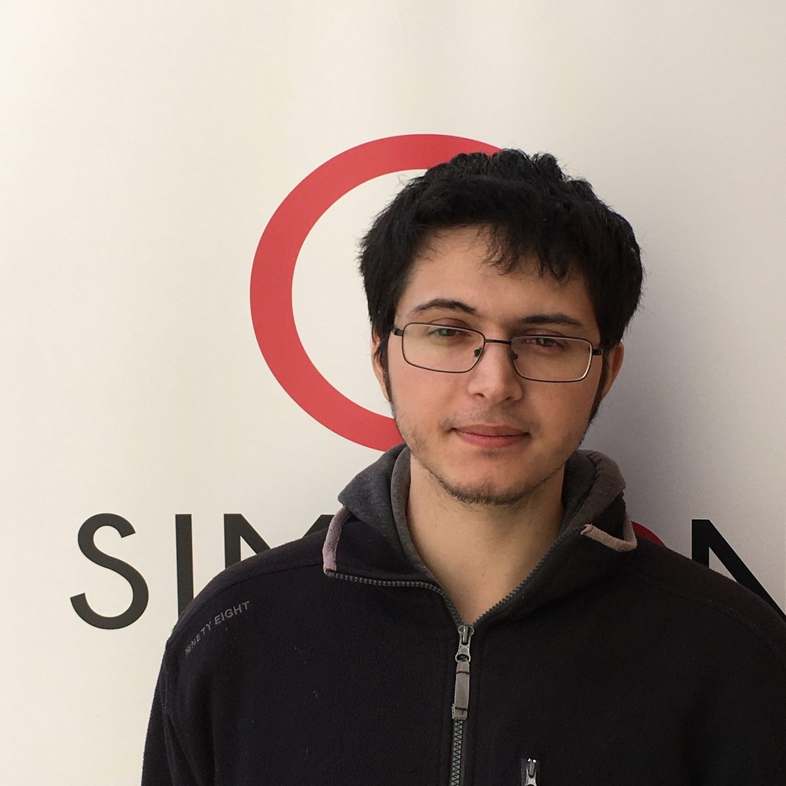

Lucas GIOVANNACCI

- lucas.giovannacci.fr@gmail.com
- Aix-les-bains
- 21ans
- 06/44/73/54/38
___________________________
Qualités
___________________________
Atouts
___________________________
Centres d'întérêt
- Création de contenu vidéo ludique Création de jeu vidéos par Logiciel Tiers
- Japon Passionné par l'hunivers nippon. Culture/Anime/Manga
Diplômes et formations
De Mars 2021 à Mai 2021
Compétences Numériques Fondamentales
Simplon Chambéry, France
Découverte des techniques de base en informatique des outils bureautiques et numériques les plus actuels.
- Gestion numérique de projets
- Dévellopement web
- Identité de marque et les multimédias
De 2019 à 2021
Sortie vers formation
Ecole de la 2eme chance Voglans
Elaboration d'un projet profassionnel par des stages en entreprises Travail sur les savoirs de base
- Francais
- Math
- Informatique
De 2017 à 2018
Recherche de projet professionnel
Garantie Jeune Aix-les-bains
De 2014 à 2016
CAP Cuisine (obtenu)
CTH Arlequin Montmélian, France
__________________________________
Expériences professionnelles (Stages)
2019
Technicien de labo photo
Vincent photo Saint Jean de Maurienne
Découverte du métier de technicien de labo photo
- Acceuil client
- Impression photo
De 2016 à 2017
Commis de cuisine
Brasserie du Théâtre Chambéry, France
2016
Pizzaïolo
Chez Saly Chambéry, France
Mon linkedin